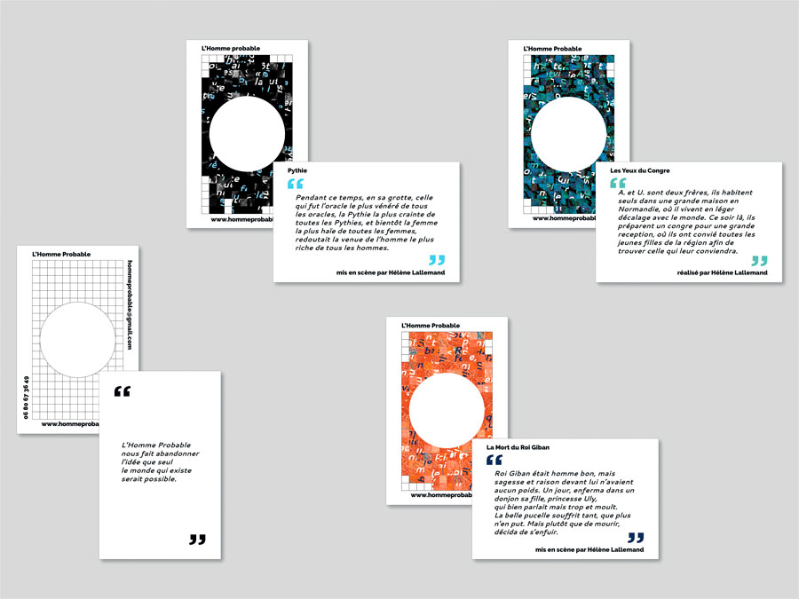
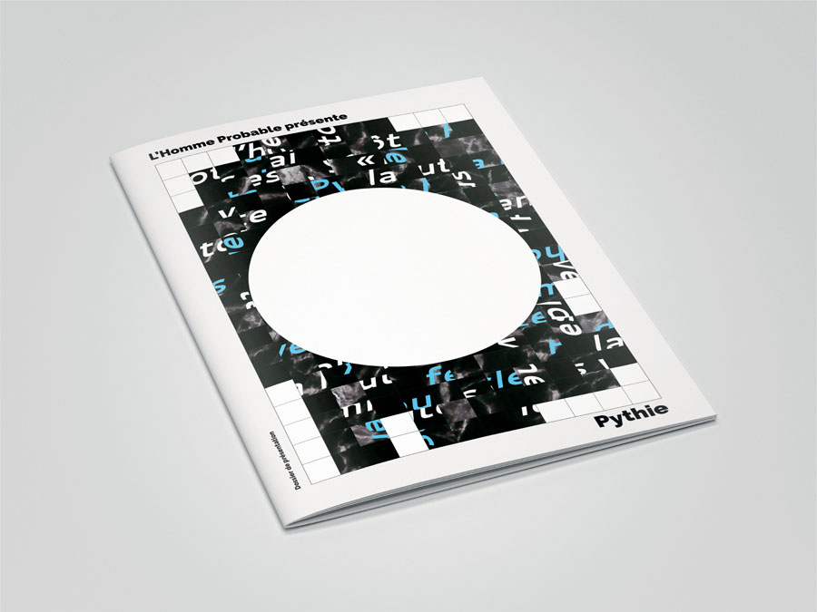
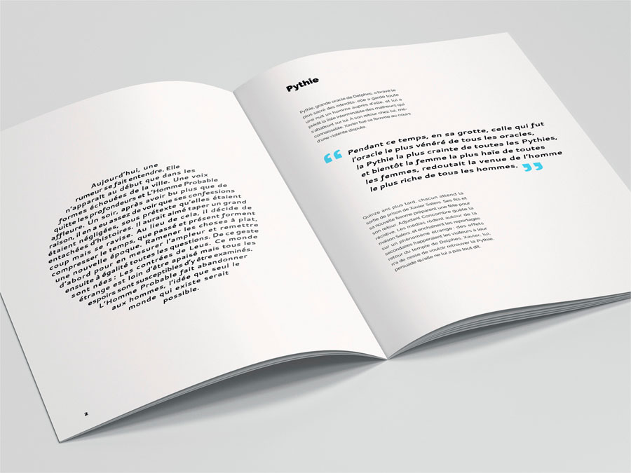
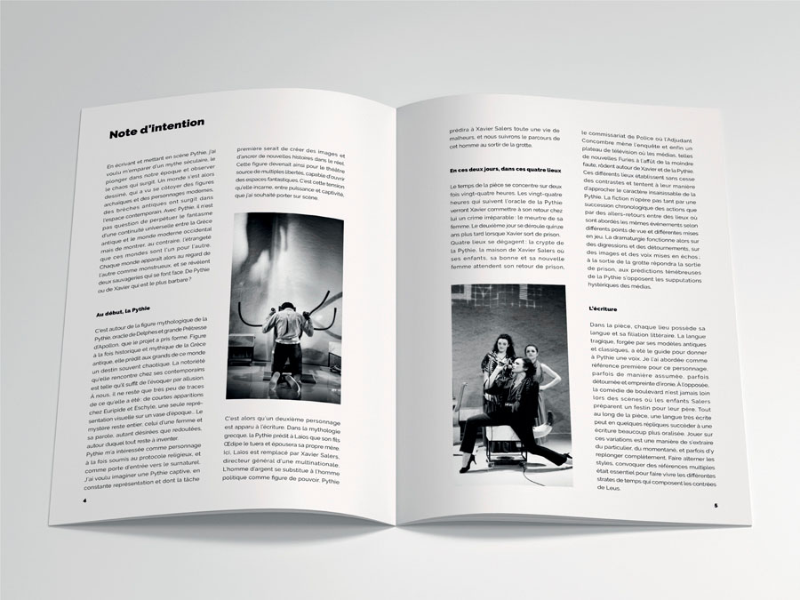
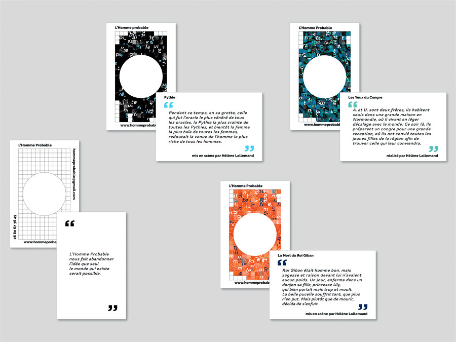
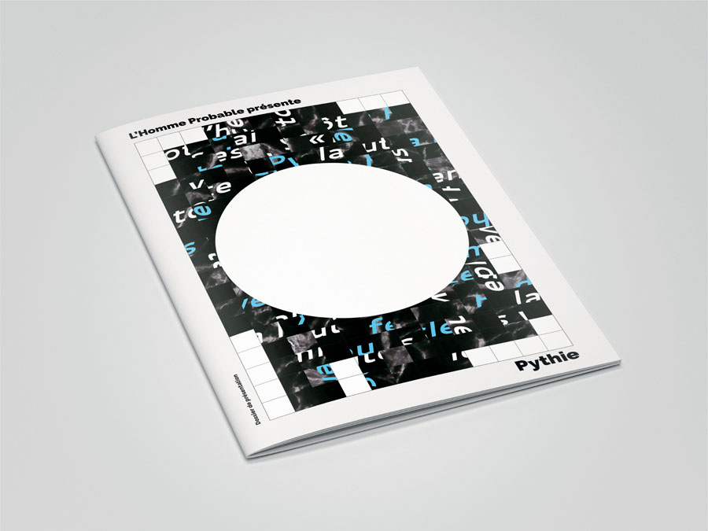
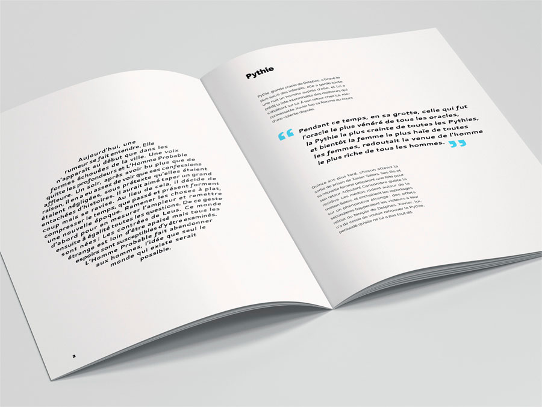
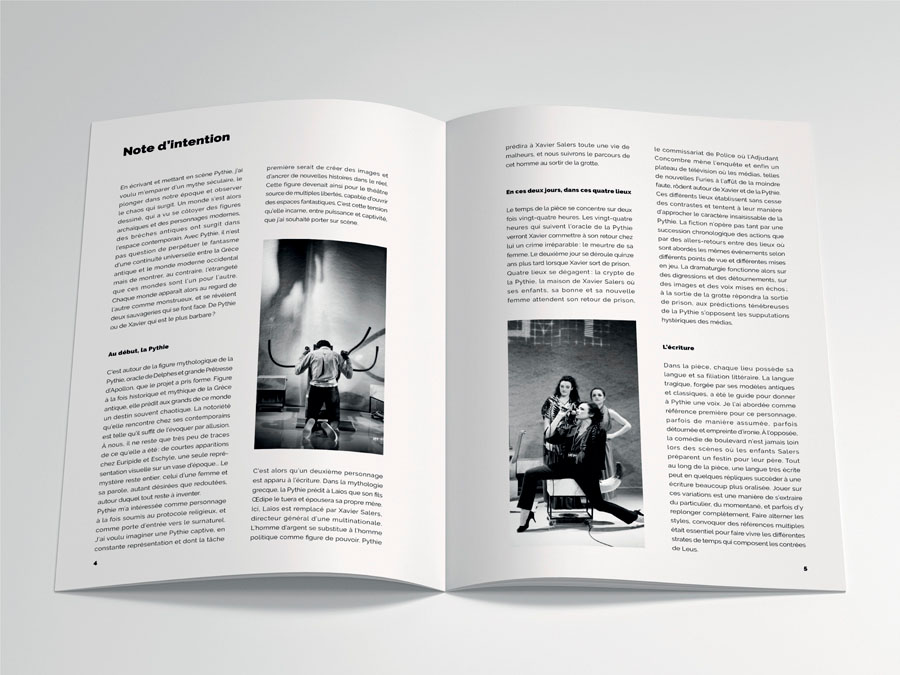

l'homme probable
un système d'identité déclinable | 2017
La compagnie l’Homme Probable est un projet global et pluridisciplinaire, qui mêle notamment théâtre et cinéma.
Pour la réalisation de la première identité visuelle de la compagnie, nous avons puisé notre inspiration dans les mires de la télévision. De ces recherches iconographiques a été extraite une grille sur laquelle seront composés les supports de communication de la compagnie.
Pour chaque pièce de théâtre ou court-métrage, nous avons créé une série d’images composées d’une texture évoquant l’oeuvre et d’une citation. Ces images sont ensuite fractionnées dans la grille pour former l’affiche, la carte de visite, ou l’invitation du spectacle.
Ce système permet à l’Homme Probable de maintenir une identité propre et dynamique, à travers ses différents projets.
En collaboration avec Nora Duprat.


 






